| Step 3: TURNING YOU GREEN |
Step 1: Alien |
Step 2: Head | Step 3: Green Skin |
You could easily turn yourself green by using the Adjustment tools, but doing so will cause everything in the entire image to be tinted a different color and we really only want our skin and hair to change color and not the background. We will use a tool to select only the things we want to turn green: Quick Mask. Using Quick Mask, we can actually draw on our image with a brush and then have Photopea turn what we drew into a selection. I know, cool huh?
Click the Brush Tool...
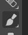
Choose the Hard Mechanical brush...
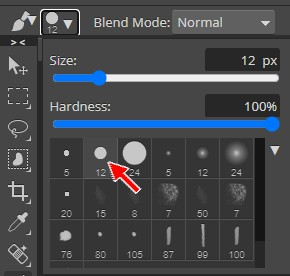
Make sure the Opacity and Flow are set to 100% in the Brush
Tool options bar...
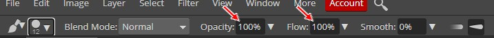
Set the brush size to 100 (remember that you can use the ] key to increase
the brush size until it reads 100...)
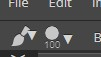
Click the Quick Mask Mode icon at the bottom left of the Photopea window...
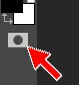
When active, the icon should look like this...
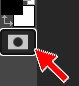
It may appear as though nothing is different, but you are in fact now in Quick Mask mode. Photopea doesn't really give us any other way to know that we are in Quick Mask mode other than the icon appearing selected. However, once we begin to draw what is going on will be obvious.
Begin coloring your skin - do only skin at this
point – notice that while in Quick Mask mode
that Photopea colors your subject red...
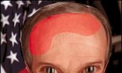
Don’t freak out, this is what we want – color in all parts of your
skin
including the head and neck and chest and shoulders and any other
skin that is showing
Fill in as much of your skin as you can with the larger brush, then decrease the brush size (remember the
Don't worry, you are not actually coloring anything red. While in Quick Mask mode, the red areas are how you tell Photopea what you want to turn into a selection and what you want to leave out. Don't worry if your red color is darker than mine, I turned the Opacity of mine down a little bit so you could see his facial features through the red color a little better.
Now you have a choice to make: you can stop Quick Masking at this point and turn only your skin green, or you can continue masking and color in your entire body including your hair and teeth so that you have this...
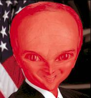
You can leave your hair and teeth their natural color or you can turn them green -
what you do is up to you. I'm going to turn my entire person green, so the
rest of the directions will be using the selection you see in the image directly
above. To see examples of both green and natural hair and teeth refer back to
Step 1: Make your decision now and continue accordingly. You can even turn your
hair a different color if you like - Ms. McRee's (the
fourth alien) purple hair is an example of this. It's all up to you. Press the Q key to exit Quick Mask mode - notice that you now have a
selection... At this point you may notice a slight problem - it appears that everything
EXCEPT the red area is selected. You're right! Quick Mask actually allows us to
indicated the areas of an image that we do not want to mess around with. This is
great, but for what we are doing it is much easier to color in the part we want
to keep and then flip the selected area so that our face is selected. Inverting
the selection area is easy. On the Menu bar, click Select and then click Inverse... At this point, there will be areas of your image that need to be fine
tuned. Follow the directions below to make adjustments. TAKE THE TIME TO GET YOUR SELECTION RIGHT!!!! A large part of your grade on
this project is based on how accurate you are with the selection tools - DO
NOT simply make a crappy selection and turn it green, instead take the time to
do a good job (take pride in your work!). When you have a selection you are happy with, it is time to turn your skin
green. Press Ctrl+U on the keyboard to open the Hue/Saturation window... Drag the Hue slider to the right until you a get a
color you like – keep in mind that you can adjust the Saturation and Lightness as well to get a color that
you are happy with... Click OK Press Ctrl+D on the keyboard to deselect your image Some of you may notice at this point that some regions of your image have a
hard, unnatural edge. Take a look at the image below...
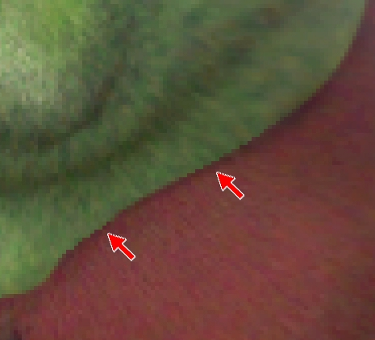 Notice
that while some parts have a slight blur to them so that they appear to blend in
with the image, that the areas pointed at with the red arrows have a definite
edge. We can easily fix this with the Blur Tool. DON'T GO CRAZY with the Blur Tool! Remember that you are simply blending
things together to make them look more realistic. If you blur your image too
much, it will simply look bad (which means lower grade!). We want our image to
look as realistic as possible. Yes, we are creating an alien, but we want it to
look like a realistic alien. Now that you are green, let's get your eyes looking a little more alien.
Step 1: Alien |
Step 2: Head | Step 3: Green Skin |
Step 4: Eyes | Step 5:
Tail | Step 6: The Background
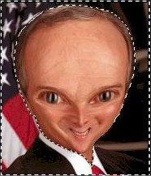
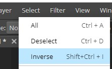
You should now have only your big bulbous head (or just your face if that is
what you want) selected...
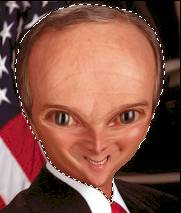
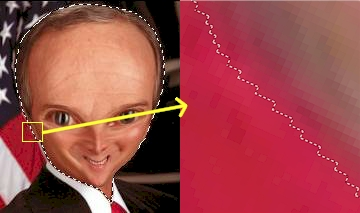
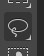
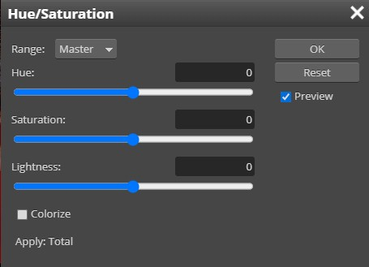
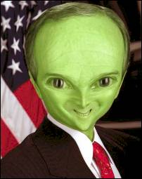
To create the above color, I used a Hue of 80 and a Saturation of -15...
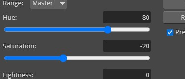
Because you are working with a different image than mine, your numbers will be different
- this is OK, just drag the sliders until you
have a nice shade of green
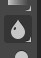
If you can not see the Blur Tool, it is on the same button as the Sharpen and
Smudge tools...
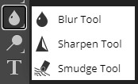
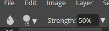
Feel free to decrease the size of the brush in any spots you need to so that
you are not blurring important parts of the image
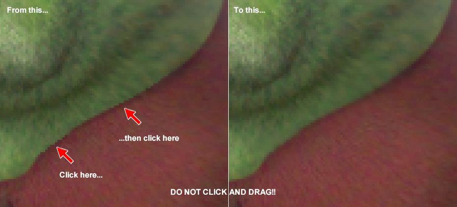
Notice that the difference is not huge, but when you zoom out and view the
entire image it should make everything look more realistic and not be so
obvious that it is an image you messed around with